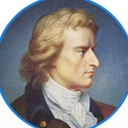

Portrait fully cleaned: the old blue ring and swoosh are gone from the source crop. Six treatments of the chosen direction, on ivory and navy.
Gold double ring — solid inner, hairline halo — gold eyebrow, Playfair semibold.

Quieter: single 1px gold ring, neutral eyebrow, lighter Playfair, short gold rule under the name. The most understated of the set.
Centered vertical lockup — the companion arrangement A1 needs for square and centered contexts.
Adds the mission line as a gold underscore — useful on title pages, conference screens, the footer.
A1's layout with the portrait gently unified toward the brand navy — takes the "old reproduction" edge off the painting while keeping it recognizably itself. (Halfway to candidate B's duotone.)
A1 at real header scale (44px roundel) inside the rebuilt homepage's nav bar, replacing the placeholder "S".